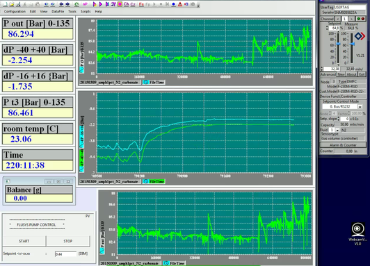

پیادهروی در دلفت-صبح نه آوریل دوهزار و پانزده
پیادهروی در دلفت-پسین هشت آوریل دوهزار و پانزده
پیادهروی در دلفت-صبح هشت آوریل دوهزار و پانزده
بعد از این کی توان به سایه نشست
تابستان دو سال پیش، ایران رفتنمان خیلی ناگهانی بود و دلایل اقتصادی داشت. منظورم از دلایل اقتصادی هست بلیط نسبتن مفت اما نه چندان راحت. نفری دویست یورو رفت و برگشت به تهران از استانبول.مامان آرشیدا با مادرش هماهنگ کرد و برایمان بلیط تهران به شیراز گرفت. به هیچ کس هم نگفتیم و رفتیم. ظهر گرم تابستان رسیدیم خانه مادر مریم. خواهرش در را که باز کرد جیغ بنفشی کشید. بچهها را گذاشتم آنجا و خودم رفتم خانهٔ خودمان. در خانهٔ ما همیشه باز است. در نزده رفتم تو. آرزو خواهرم با وحید شوهرش هم بودند. وحید اولین نفری بود که آمدنم را دید. مادرم -به اقتضای مادری- یک دور کامل همه سناریوهای بد -و طبعن غیر ممکن- را در کسری از ثانیه در ذهنش مرور کرد و آخرش پرسید چی شده؟ چرا اومدین؟ بچهها کجان؟ چند دقیقهای طول کشید تا رضایت بدهد تظاهر کند خیالش راحت شده. چند روز بعد خیالش راحت شد که جدی جدی طوری نشده. خبر سرزده آمدنمان مثل بمب ترکید. همه آمدند دیدنمان. عمو جعفر را خوب یادم است که نشسته بود روی صندلی روبروی دهانهٔ کولر آبی پشت بام. من نشسته بودم روی زمین و تکیه داده بودم به دیوار. خیلی زیر پوستی طوری که من اگر یک بچه چهار ساله بودم نمیفهمیدم به مادرم اشاره کرد که احسان سر مزار هم رفته؟ اگر نرفته ببرمش. مادرم هم اشاره کرد که هروقت خودش خواست و اینها. فکر که میکنم میبینم چهارساله هم اگر بودم میفهمیدم. شاید هم از آن حرفهایی بود که دلش نمیخواست مستقیم بگوید. همان کاری را کردم که آدم برای زندگی در ایران باید خوب بلد باشد. خودم را زدم به نفهمیدن. از همان اولش هم میخواستم تنها بروم. همان اوایل مادرم موقع تعریف مراسم گفته بود که خاکش نزدیک خاک بیبی است. مادر باباعلی و مادربزرگ من.
چند روز بعد یک صبح زود از خانه زدم بیرون. همهجا خلوت بود و هوا هنوز بوی خنک قبل از طلوع میداد. حس خاصی نداشتم. شهر عوض نشده بود. از کنار مدرسه شریعتی رد شدم و رفتم توی مسیر پر از خاک و خل قبرستان پشت پیرِمراد. آخرین باری که رفته بودم قبرستان در و دیوار نداشت. گویا آدم -به قول فرنگیها سو کالْد- خیّری خانهٔ امواتش را نونوار کرده بود. دو سه دقیقهای طول کشید تا قبر بیبی را پیدا کنم و بعدش یکی دو دقیقه تا برسم به خاک باباعلی. نشستم. کنارش. خودم را مجسم کرده بودم که همان لحظهٔ اول میزنم زیر گریه. با هقهق. ساکت نشستم و نگاه کردم. شعر روی سنگ را حفظ کردم. آن تناور درخت خانه شکست/بعد از این کی توان به سایه نشست. جایی که نشسته بودم سایهای نبود و آفتاب به قول ادبا تموز شروع کرده بود به سوزاندن. خاطرات هجوم آوردند. هجوم لغت خوبی است برای کاری که خاطرات با آدم میکنند. مثل قوم مغول چیزی جلودارشان نیست به جز چند قلم مادهٔ ممنوع. جای خالیاش را دیدم. توی همه خاطرات خوب. گریه آمد. با هقهق. تازه شروع کرده بودم که صدای داد و بیداد زنی از آن طرف قبرستان حواسم را پرت کرد. بچه نیستیم که چیزی تمرکز هقهق کردنمان را به هم نزند. داد و بیدادش برای جلب توجه بود. همهٔ حرفهایش را میتوانست توی دلش هم بگوید و گریه کند. جزییاتش بیش از حدی بود که برای دل خودش باشد. شاید اگر من را ندیده بود چیزی نمیگفت. عصبانی شدم. بخشی از عصبانیت مانده از قبل بود شاید. نمیدانم. هقهق کوتاه تمام شد. صبر کردم تا همهٔ قصهاش را برای تک تماشاچیاش بگوید. امید بسته بودم به آفتاب که راضیاش کند به رفتن. احتمالن آن قدری با چادر سیاه زیر آفتاب ظهر راه رفته بود که با آفتاب ملایم اول صبح صفا کند. خستهام کرد. بلند شدم. او هم بلند شد و رفت. من و مردهها به آسایش رسیدیم.
روزهای آخر برای همه سؤال بود که چرا احسان نرفته سر خاک. حریم خصوصی برای این مردم ناشناخته است. روزهای آخر با مریم و آیدا و مادرم رفتیم. آیدا از مرگ و مراسم تدفین میپرسید و من با صدای لرزان برایش توضیح میدادم. حین گریهٔ مریم سر خاک. گریه نکردم که دختر به هم نریزد.
به مادرم گفتم قبلن آمده بودم. احتمالن فامیل هم به آرامش رسیدند.
سخت میگیرد جهان بر مردمان سختکوش
ژنی هست در وجود دختر که ریشه دارد در آبای پدری و احتمالن میرسد به خود خواجهٔ شیراز که «گفت آسان گیر بر خود کارها». چند نمونه:
«بابا تشنمه.» [ترجمه: بابا برام آب بیار]. «برو یه لیوان آب بخور بابا». «نمیخواد. تُفم قورت میدم خوب میشه».
«باید برم دستشویی. خیلی خوب شد دفعهٔ قبل که رفتم دستشویی دستم نشستم».
در حالی که روی مبل نشسته و یوتیوب میبیند «کی میخواد برای من آبمیوه درست کنه لطفن؟».
نمره درس ورزشش از همه درسها کمتر است. برایش کلاس جبرانی گذاشتهاند. توضیح ضروری اینکه در آخرین برف دلفت آنقدر بابا را دنبال خودش کشید که یک هفته مریض بودم.
تنبلی مادر تمام اختراعات بشری است. اگر روزی روزگاری آدمهای گشادی از سختی کار به تنگ نیامده بودند هیچ ماشین چاپی جایگزین میرزا بنویسها و هیچ تراکتوری جانشین بیلزنها نشده بود.
یادمان بماند همهٔ آدمهای گشاد برای لذتبردن از تنبلیهایشان حاضرند شبانهروز کار کنند. کاری که هیچ انسان غیرگشادی نمیکند. گشادها همیشه دنبال راههای سادهتر و پربازدهترند. گشادی گشادان را سهل نتوان دید و ستود. سعدی اگر گشاد نبود و زیاد مینوشت آن نثر قشنگ و مختصر و مفیدی که با کمترین لغات بیشترین معانی را منتقل میکند شکل نمیگرفت.
رد پای گشادی را در کمتر اختراع بشری است که نتوان دید. جنس این گشادی خلاقانه و فعالانه خیلی تفاوت دارد با گشادی عوامانه و منفعلانه. گشادیای از جنس کلیک. گشادی نسل جدید. گشادی را اما همچنان میشود به فال نیک گرفت.
کشش سطحی
آزمایشی هست در علوم دبستان یا شاید راهنمایی -بلکه هم دبیرستان- که یک عدد سوزن یا یک برگ تیغ صورتتراشی عصر ما قبل ژیلت را خیلی آرام میگذاریم روی آب و در کمال تعجب در آب غرق نمیشود. بعد هم ربطش میدهیم به کشش سطحی بالای آب. بعدش بخش هیجانانگیز ماجرا این است که یک قطره مایع ظرفشویی (هنوز هم میگویند ریکا یا مال نسل ما بود) یا آب صابون میچکاندیم گوشهٔ ظرف و سوزن و تیغ بینوا غرق میشدند. جواب سوال امتحان ثلث هم این بود که صابون کشش سطحی آب را کم میکند. از دیگر استفادههای کشش سطحی این است که میتوان نوشتش بالای کاغذ و زیرش یک فیلمنامهٔ معناگرا نوشت که در آن یک پسر با ریش بزی بدون سیبیل و موهای آشفته، عاشق (به فتح شین) یک دختر بدحجاب گردیده و در نهایت کارشان به طلاق میرسد.
امروز کارم همین بود. اندازهگیری کشش سطحی. روش بسیار ابتدایی و دقیقی دارد به اسم حلقهٔ دونوی. شامل یک عدد حلقه است که در سطح فرو رفته و به آرامی بیرون کشیده میشود. بر اساس تغییر نیروی وارده به حلقه در هنگام خروج از مایع، میتوان کشش سطحی را حساب کرد. تنها مسئله این است که باید حلقه را بعد از هر استفاده با شعله مشعل تمیز کرد تا خوب ضدعفونی شود. آتش تمام مواد فعال سطحی را میکشد. همانطور که میدانید در فیلمها هم وقتی نامزد کاراکتر بزنبهادر فیلم با کارد میوهخوری گلولهها را از بدن جمشید آریا (برای شما هاشمپور) بیرون میکشد قبلش با فندک کارد را خوب تمیز میکند. این حرارت بالا میتواند شکل حلقه را عوض کند و باعث شود حلقه زود زنگ (در شهر ما منگ) بزند. پس باید حلقه را از یک فلز مناسب تهیه کرد. فلز مناسب یعنی فلز گران. در این مورد پلاتین. یک حلقه کوچک هشتصد یوروی ناقابل. تنها حلقه سالمی که برای دستگاه مانده را تکنیسین مربوطه، الن، در جای مناسبی مخفی کرده و فقط به خودش اجازه استفاده میدهد. امروز هم من نمونهها را آماده میکردم و الن اندازه میگرفت. امروز نیمهوقت دانشگاه بود و مجبور شدم برای تمام شدن آزمایشها، وقت ناهار را بمانم و محلول آماده کنم.
الن دو تا دختر دارد. گاهی درباره بچهداری حرف میزنیم. به من که نگران سالهای آینده بودم میگفت هر سن و سالی لطف خودش را دارد. دختر بزرگش هیجده ساله است. کسی که یک دختر را به هیجده سالگی برساند و از حاصل کارش راضی باشد، به نظر من باید بازنشسته شود. الن اما تازه فهمیده که شوهرش سرطان خون دارد. هیچ وقت به زشتیهای این لغت توجه کردهاید وقتی روی کاغذ میآید؟ دست و دلم نمیرود حال شوهرش را بپرسم. آخرین بار که حال منشیمان را، دو هفته بعد از تصادف منجر به فوت گربهاش، پرسیدم زد زیر گریه. نمیدانم وقتی آدمها گریه میکنند باید چه کرد. بغلشان کنی؟ موهایشان را نوازش کنی؟ چیزکی بگویی؟ ترجیح من این است که دستی بزنی روی شانهشان و بروی تا خوب گریه کنند.
آزمایش امروز
کار در آزمایشگاه یک حسن بزرگ دارد. شاید هم دو تا. اول این که آدم دنیای واقعی را میبیند و تجربه میکند. دنیای واقعی گفتم در برابر مدلهای ریاضی و محاسبات کامپیوتری. دوم این که آدم نتیجه کارش را زود میبیند. چه موفقیت باشد چه شکست. از دوشنبه درگیر سرهم کردن تجهیزات بودم تا امروز عصر که همه چیز آماده شد و شکستم را با روی باز پذیرفتم. یک تکه لوله کهنه را تکنیسین استفاده کرده بود برای یک اتصال مهم. از محل اتصال نشتی داشت. توی فشار پایین نشتی معلوم نبود. فشار را که بردم بالا همه جا را آب گرفت. اغراق میکنم البته. مجموعن ده سیسی آب ریخته بود کف اجاق (اجاق ترجمه خوبی هست برای آون؟). خلاصه که تصمیم گرفتم حالا که آزمایش هنوز شروع نشده یکی دو تا از قطعهها را عوض کنم تا نتیجه را بهتر بشود مقایسه کرد با آزمایش قبل. آن یکی آزمایش دیگرم البته خوب جلو میرود. امشب تمامش میکنم. فردا هم آزمایشهای کشش سطحی را داریم و این بخش از کار تمام میشود. محلول آب و صابون را آماده کردهام برای آزمایش.
ساندویچ آخر امروز را گاز میزنم. نان تست، کالباس مرغ، و کاهو. خشک و کممزه است. با هر لقمه یک قلپ آب میخورم. جهت مقایسه قیمت: یک بسته بزرگ نان تست حدود بیست و پنج برش دو یورو. یک بسته کوچک کالباس مرغ حدود صد گرم یک یورو و هشتاد سنت. یک بسته چهارصد گرمی کاهوی سالاد آماده مصرف دو یورو. هشت برش نان تست خوردم به اضافه همهٔ کاهو و کالباس. از صبح چهار برش هم نان تست کشمشی خوردم با کره بادام زمینی. دیشب مریم کلمپلوی شیرازی پخته بود. به قصد کشت خوردم. احتمالن جغد یا اژدهایی در معدهام لانه کرده و همه این ورودیها را میبلعد و وزنم را ثابت نگه میدارد. هنوز هم ته دلم خالیست. سهمیه موز امروزم را هم دارم میخورم.
این چرت و پرتها را دارم مینویسم که آزمایش به تعادل برسد و بساطم را جمع کنم بروم خانه. شبها خودم را با مقاله انرژی ژئوترمال (زمینگرمایی؟) سرگرم میکنم. تنوع بد نیست.
آزمایش به چنان تعادل خوبی رسیده که اشک در چشمان آدم جمع میشود. سه تا نقطه دیگر مانده که امشب تمام میشود. دادهها را هم قبل از عید آنالیز کنم راحت میشوم.
کنجکاوید نتیجه آزمایش را ببینید؟ خدمت شما:

سال گذشته
سال نود و سه هم رو به پایان است. این نود و سه را که میخواستم بنویسم صفحه دسکتاپم را نگاه کردم. حسابش چند سالی هست که از دستم در رفته. از سال قبل دو تا کار خوب یادم مانده: ترک خیلی جدی خواندن سایتهای خبری و خواندن تعداد زیادی کتاب. سر فرصت لیست کتابها را مینویسم. به خصوص به خاطر کتابهای بدی که بینشان بود.
عید اینجا بد نیست. هوا هنوز سرد است و گاهی یکی دو ساعتی که خورشید در بیاید و دما برود بالای سیزده چهارده درجه [سانتیگراد]، کلهمان را از پنجره میبریم بیرون و زور میزنیم بوی عید را از دل هوای خنک دلفت بکشیم توی دماغ ایرانی بزرگمان. مریم -هر چند دماغش کوچکتر است- معمولن موفق میشود. من اما -با دماغ بزرگترم- چیزی از عید نمیفهمم. عید با آجیل و لباس قسطی و خانه بیبی عیدتر است. خوبیهای اینجا هم کم نیست. مثلن سریالهای روزانه و مردان آهنین نمیبینیم.
اعتیاد به پیادهروی را هم باید اضافه کنم به عادتهای خوب نود و سه. به قول خارجیها فیزیکالی سالمتر و سرحالترم. بیشتر یاد گرفتم و بهتر کار کردم. آرامترم از سالهای قبلتر.
نود و چهار سال مهمتری است. کارهای عقبافتاده و پشت گوش انداخته شده را باید جمع و جور کنم. توان و انرژیاش را دارم. ارادهاش را هم تا ببینیم.
بهارتان پیشاپیش مبارک.
دوران بعد از ترک وبگردی – هفته اول
سهشنبه بیست و سه سپتامبر دوهزار و چهارده
دیشب بالاخره نشستم و ته و توی کار با ابزارهای بهینهسازی جولیا را درآوردم. هنوز آن چیزی که میخواستم نیست. البته یک ابزار دیگر مانده که باید تست کنم. ولی مرتب و خوب و نسبتاً راحت بود.
از مزایای دختر داشتن یکی این است که شبها دست بابا را میگیرد و خواب میرود. بعد بابا میتواند دستش را بگذارد روی قلب دختر و ضربان قلب منظمش را بشمارد و موهای کوتاهش را نوازش کند و همهٔ غم دنیا را بسپارد به باد!
امروز همچنان حالم خوب نیست. پیادهروی را ترک نکردهام ولی فکر کنم در حین سرما خوردن باشم. امروز صبح یاد سالی افتاده بودم که اسیران ایرانی آزاد شدند. خانهٔ بیبی بودم و کمی شاگرد آقا (مرحوم پدربزرگ مادریام). میگویم کمی چون کار خاصی نمیکردم جز خوردن شکلات و مواظبت از مغازه -در حد مترسک- وقتی آقا بیرون میرفت برای نماز یا خرید. شرح وظایفم کل یوم تکرار این جمله بود: «خودش نیست». به لهجه خودمان به ضم دال. برای ناهار پیاده میرفتم خانه بیبی. ناهار معمولاً تاسکباب بود. بله من هم اولین بار گول اسمش را خوردم. این غذا عبارت است از خورشت سیبزمینی یا هویج بدون گوشت و برنج. خستهترین غذای تاریخ بشریت پایان خوبی بود برای تکراریترین روزهای زندگی پسربچهٔ نه سالهای که باید توی کوچهها میدوید یا ژول ورن میخواند. حقوق هم میگرفتم حدود روزی ده یا بیست تومان اگر یادم میماند از دخل بردارم. پول را میریختم توی قلک پلاستیکی خرسی که یک بار پاره شده بود و آقا درش را چند لایه نوار چسب پلاستیکی زده بود. ریسایکلینگ خانگی. یادم است آخر تابستان آقا چسب را یک تکه کند، پولها را شمرد، کمی فکر کرد، چند تا پنجاه تومانی از جیبش اضافه کرد جهت غنیسازی دستمزد پسر شکلاتخور. شده بود هزار تومان. اسکناسها را لوله کرده بودم و یک کش باریک پیچیده بودم دورش. وزن پول را توی دستم حس میکردم و لذت میبردم. فردایش باباعلی پول را با مهربانی ازم قرض گرفت و هیچ وقت پس نداد!
طبقهٔ بالای خانهٔ بیبی را اجاره داده بودند به یک زوج جوان. بعید میدانم اجاره میگرفتند. آقا دست و دلباز بود و برای بیبی هم احتمالاً ثواب کار خیر میچربید به چندرغاز اجارهخانه. بیبی البته سواد نداشت ولی ثواب را خوب ضرب و تقسیم میکرد. هنوز هم میکند.
زوج جوان یکی داستان بود پر آب چشم. شوهر خانم در جبهه مفقودالاثر شده بود و همهٔ فامیل ناامید که شده بودند از بازگشت مرد رزمنده، با برادر شوهرش ازدواج کرده بود. مرد چند سالی از زن جوانتر بود. یادم است بیبی وقتی این را میگفت صورتش طوری میشد که انگار مرد بینوا با ننهاش ازدواج کرده. یک بار از خانم پرسیدم چرا با مرد جوانتر از خودش وصلت کرده. رنگش پرید و همه چیز را از بیخ و بن تکذیب کرد. اگر توی اروپا بود احتمالاً لبخند رضایتی میزد و میگفت بزرگ شدی خودت میفهمی.
قضیه البته به اینجا ختم نشد. چهرههای عصبانی پرخاشکنان با منطق تخمی آدمهای قدیمی به من حالی کردند که تو نمیفهمی نباید این حرفها را جلوی طرف بزنی؟ و من حساب میکردم حتماً این حرفها را باید پشت سر آدمها زد.
همینجا کمی هم بروم بالای منبر که: آقایان. خانمها. نه از اول. روی منبر اینطور میگویند: برادران. خواهران. پدران و مادران و مادربزرگان. نه! بچه نه ساله مناسبات احمقانه بزرگترها را نمیفهمد. این را توی کلهٔ پوکتان فرو کنید. هیچ وقت هم به بچه نگویید ما اندازه تو بودیم چنین بودیم و چنان. چون بچه از هم سن و سالهایتان میپرسد و میفهمد هیچ کس در کل این فامیل و این محله و این شهر هیچ وقت هیچ گهی نبوده. پایان منبر.
سالی بود که آزادهها برمیگشتند. اسامی را رادیو میگفت. زمان بازگشتشان معلوم میشد. ملت بلند میشدند و با موتور و مینیبوس و اتوبوس میافتاندند توی جادههایی که روزهای عادی هم بالای ظرفیت استفاده میشد. نتیجهاش هم خلق نوع جدیدی بود از کشته و معلول. شهدای شادی خلق جهان سوم. بعد طرف میرسید خانه. لاغر و زرد و خسته. میگذاشتندش روی صندلی توی حیاط و ملت فضول میآمدند به تماشا. آشنا اگر بودند چهار تا ماچش هم میکردند جهت تبادل باکتریهای ناشناخته. تمرینی برای ارتقای سیستم ایمنی بدنهای کمرمق. مستأجر بیبی رنگ به چهره نداشت و من نمیفهمیدم چرا. فکر میکردم چون دایی برگشته و باید بروند جای دیگری پیدا کنند. هر روز خبرهای جدید میرسید. از آدهایی که قبر هم داشتند توی گلزار شهدا و سر و مر و گنده برگشته بودند پیش مادری که سالها بالای همان قبر خالی گریه کرده بود. بیبی به خنده ادای دوستش را در میآورد: «قربون قبر پوکت بشم ننه». باز هم با لهجه خودمان به ضم کاف؛ و رنگ مستأجر بیبی بیشتر میپرید.
یکی دو سالی گذشت و شوهری از جنگ برنگشت. برای همیشه مفقودالاثر شده بود. بزرگتر که شدم و آشناتر با مناسبات احمقانه آدمبزرگها، برایم سوال بود که مستأجر بیبی هم آرزو داشت شوهرش برگردد؟
جمعه بیست و شش سپتامبر دوهزار و چهارده
هفتهٔ بدی نبود. خوب کار کردم. سایتهای خبری را تقریبن کامل ترک کردهام. هنوز نتایج فوتبال را چک میکنم. ولی گلهای بازیها را ندیدهام. مصرف یوتیوب خیلی کم شده. شوهای خبری طنز را گاهی از تلویزیون تماشا میکنم. هنوز به مرحله تولید محتوا نرسیدهام. دو سه باری هم جستجوهای نِردی بیجهت وقتم را تلف کرده. ولی از کارم تا الان راضی هستم. تولید محتوا را باید بیشتر کنم. مطالعهٔ علمی هم به همچنین. کتاب هم همچنان همان «دختری که پادشاه سوئد را نجات داد». بامزه است. بیشتر از نصفش را خواندهام و توصیه میکنم به همهٔ آنهایی که زبان یاد میآموزند.